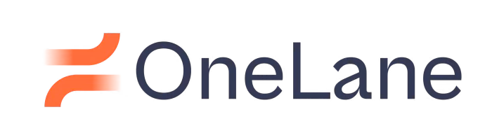
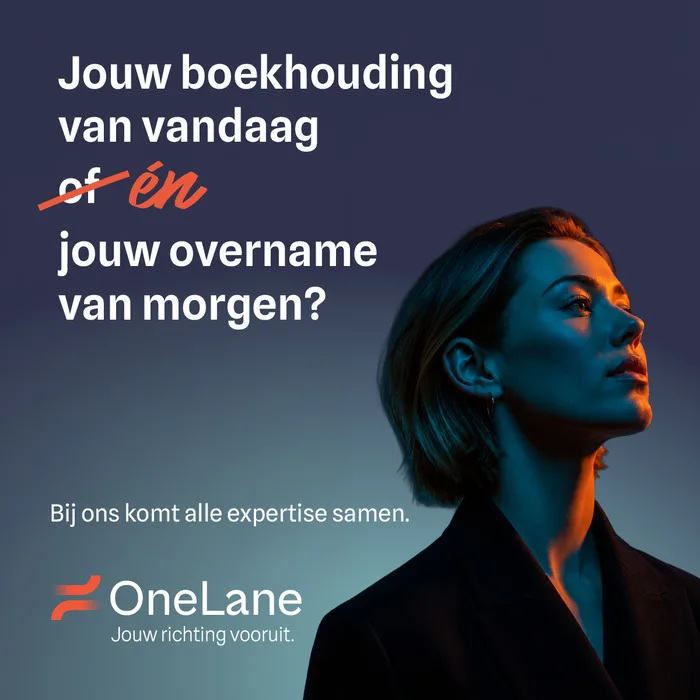
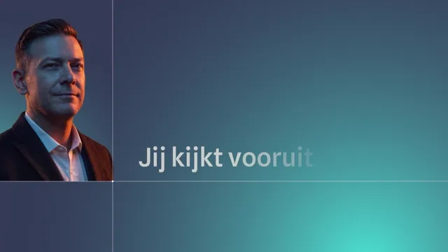
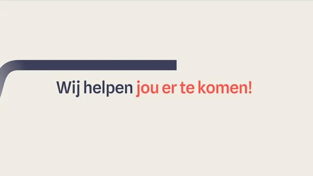

5 t/m 19 oktober 2026
In de eerste twee weken, van 5 tot en met 19 oktober, heeft de campagne meer mensen bereikt dan we hadden verwacht, en dat voor minder geld per persoon. OneLane was te zien op schermen op NS-stations, te horen op NPO Radio 1 en online actief op Facebook, Instagram, LinkedIn, YouTube en sinds 17 oktober ook op Spotify. Het budget wordt vrijwel volgens plan besteed, de website trekt dagelijks ruim honderd bezoekers en de reacties op de advertenties zijn bijna allemaal positief.
55% meer dan we voor deze periode hadden verwacht.
Zo veel kost het om een advertentie duizend keer te laten zien. Verwacht was € 7,47.
€ 12.846 van de € 13.777 die tot nu toe gepland stond. Spotify startte later.
Het gemiddelde aantal mensen dat dagelijks onelane.nl bezocht.
Op de advertenties op Meta, LinkedIn en YouTube.
| Kanaal | Besteed / budget | Bereik | Frequentie | Impressies | CPM | CPC | ||||||
|---|---|---|---|---|---|---|---|---|---|---|---|---|
| Resultaat | Projectie | Resultaat | Projectie | Resultaat | Projectie | Resultaat | Projectie | Resultaat | Projectie | Resultaat | Projectie | |
| Out of home | € 3.571 | € 3.571 | 142.857 | 142.857 | 3,50 | 3,50 | 500.000 | 500.000 | € 7,14 | € 7,14 | − | − |
| Radio | € 5.048 | € 4.862 | 316.000 | 292.217 | 3,09 | 3,10 | 975.282 | 905.874 | € 5,18 | € 5,37 | − | − |
| Meta | € 1.866 | € 1.973 | 320.839 | 87.500 | 2,09 | 3,00 | 672.144 | 262.500 | € 2,78 | € 7,52 | € 1,80 | € 0,75 |
| € 1.683 | € 1.973 | 39.627 | 21.429 | 1,48 | 2,75 | 58.770 | 58.929 | € 28,64 | € 33,48 | € 9,56 | € 6,70 | |
| YouTube | € 535 | € 714 | 67.594 | 28.571 | 1,36 | 2,50 | 91.895 | 71.429 | € 5,83 | € 10,00 | € 24,34 | € 2,50 |
| Spotify | € 141 | € 683 | 24.552 | 15.024 | 1,68 | 3,00 | 41.175 | 45.073 | € 3,43 | € 15,15 | € 1,33 | € 5,05 |
| Totaal | € 12.846 | € 13.777 | 911.469 | 587.599 | 2,57 | 3,14 | 2.339.266 | 1.843.804 | € 5,49 | € 7,47 | € 3,15 | € 1,60 |
Versie 2 haalt de meeste websitebezoekers: op Meta klikt 2,9% door (versie 1: 2,2%), voor € 0,46 per bezoek.

Op YouTube kijkt 96% de 6 seconden-video helemaal uit, tegen 75% bij de 20 seconden-versie.
Daar wordt hij gemiddeld 11 seconden bekeken voor € 0,02 per ThruPlay; in de bereikcampagne is dat gemiddeld 1 seconde.


Duizend personen bereiken kost op beide kanalen € 6, tegen € 16 voor radio.
0,30% van de vertoningen leidt tot een klik, twee keer zoveel als op Meta (0,15%).
Gemiddeld ruim drie contacten per persoon, tegen 2,1 op Meta en 1,5 op LinkedIn.
Op Meta bekijken zij de video vier keer zo vaak als 18- tot 34-jarigen (10% tegen 2,6% van de vertoningen).
Op Facebook wordt de video vier keer zo vaak bekeken, op Instagram wordt anderhalf keer zo vaak doorgeklikt.
2,2 klikken per duizend vertoningen, tegen 1,5 gemiddeld in Nederland.
| Kanaal | Reacties | Positief | Negatief | Opmerkingen | Gedeeld | Opgeslagen | Reacties per 1.000 impressies |
|---|---|---|---|---|---|---|---|
| Meta | 156 | 155 (like) | 1 (boos) | 3 | 13 | 10 | 0,23 |
| 17 | 17 | 0 | 0 | 0 | − | 0,29 | |
| YouTube | 1 | 1 | 0 | 0 | − | − | 0,01 |
| Totaal | 174 | 173 | 1 | 3 | 13 | 10 | 0,21 |
De reacties zijn vrijwel volledig positief: 173 van de 174 reacties op Meta, LinkedIn en YouTube zijn positief, met één boze reactie op Meta. Buiten de advertenties is de nieuwe naam opgepikt door de vakpers (SRA en Accountant.nl); op Reddit zijn geen vermeldingen gevonden.
Er is € 1.000 van Spotify naar YouTube verschoven, omdat de video daar goed bekeken wordt: 90% van de vertoningen wordt een weergave, voor minder dan een cent per weergave. Daarnaast is de doelgroep op LinkedIn iets verbreed, zodat het budget sneller wordt uitgeleverd.